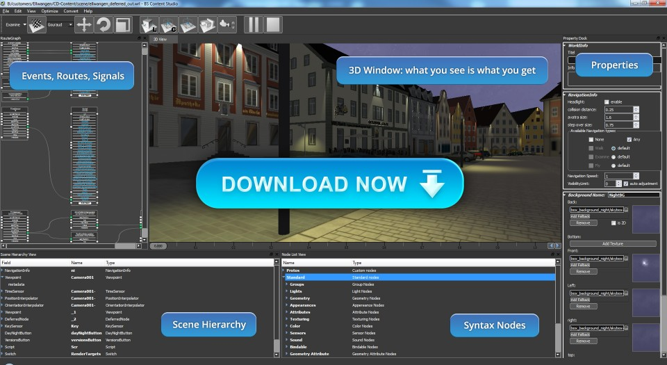
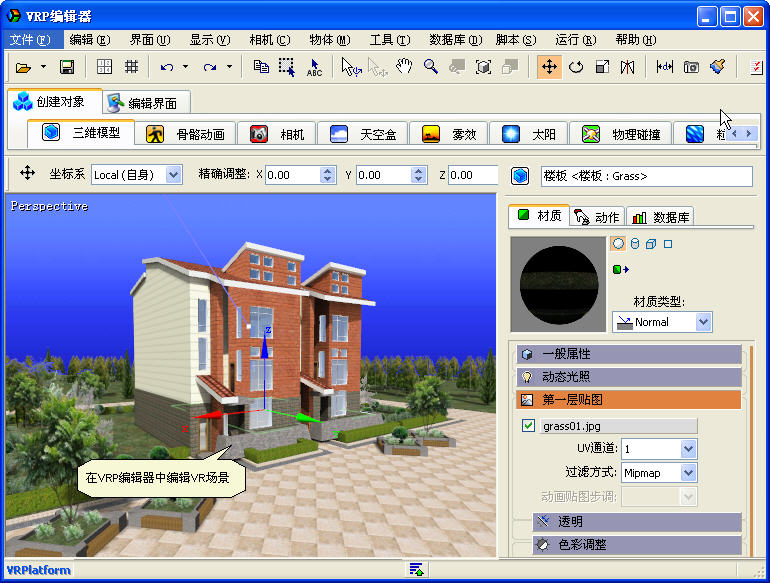
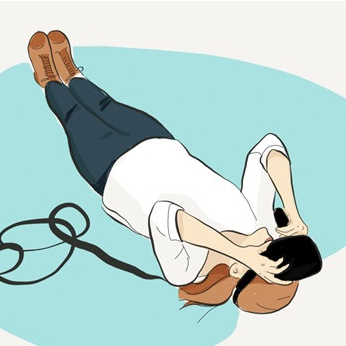
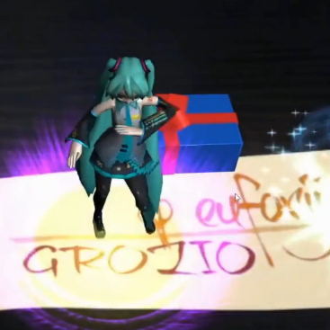

市面上常见的几种VR开发引擎有哪些？
从有VR开始至今，出现了各种各样虚拟现实技术的解决方案，看似五花八门，各家的方法方向与侧重点不同，但其实他们的最终目标是一致的。为了实现他们制定的解决方案，他们得制作出实现这种解决方案的硬件系统或软件系统，而实现的软件系统，就是所说的虚拟现实引擎。那么市面上常见的几种VR开发引擎有哪些？
引擎分制作软件和浏览软件，虚拟现实有很多种实现的引擎，而他们的制作软件与浏览软件都是不通用的，所以你要浏览哪种引擎的作品，就得安装那种引擎的浏览软件。现在很多引擎的作品是可以嵌入网页里面，但一般浏览器是不会事先帮你装好浏览软件，所以你得自己装，这个浏览软件就称之为网页浏览器的插件，所以平时我们常说的插件，就是这个。如果引擎只有单机版，有的已经打包好了，可以直接观看，就不需要再另行安装浏览软件了，但如果没有，你还是得自行安装。
下面列举一些市面上常见的几种VR开发引擎：
360度全景虚拟：实现的方式有Flash和Java。其实说它是虚拟现实技术，比较牵强，因为它实际上是一张全景图片，只不过你可以控制旋转观看而已。但这却成为它的优势。原因就是他的这张图片是全景摄像机拍摄于真实场景（或者渲染出来的图片），绝对真实，虽然他不能漫游，只能定点观看，但他文件小，制作周期成本相对较少，所以这对于一些要求真实还原效果却不需要什么漫游互动等的客户（例如酒店等）非常有用。
Vrml技术：虚拟现实引擎的鼻祖。Vrml其实是一套虚拟现实语言规范，他的特点是文件小，灵活度比较自由，比较适合网络传播，但由于年代较久远，所以画面效果比较差，但对于要放于网络上不是很注重效果的（例如工业方面），就可以用它。Vrml实现的引擎比较著名的有两种：
Cortona：有专用的建模工具和动画互动制作工具，他同样支持其他建模软件制作好导过来的模型文件，并可以进行优化，文件小，互动较强，比较适合做工业方面的作品。
Bitmanagement Software（简称BS）：画面效果优于Cortona，但互动不及它，它没有专用建模工具，所以必须用其他建模软件制作的模型，所以文件比Cortona大，但他相对于Cortona简单的动画互动制作工具，所以BS比较适合做些要求不是很高的漫游类作品。

WireFusion（简称WF）：拖放式的可视化编程工具，它不需要你编写任何代码，就可以设计出先进的，交互式动态Web3d网页。使用Java技术，跨平台性好，效果不错，文件小，适合放在网络上，互动功能已经成为许多预先定制好的模块，虽然有一定的局限性，但做一些不是很复杂的互动，可以相当迅速，但不支持一些比较复杂的画面效果，所以WF比较适合做些产品展示类作品。

它支持三维,二维、 macromedia的flash、视频和mp3音频，也能够创造360度的全景图，幻灯片及缩放图像。
Virtools（简称VT）：法国重量级引擎，世博会指定引擎。VT起初定义为游戏引擎（平衡球-VT的作品），但后来却主要做虚拟现实。VT扩展性好，可以自定义功能（只要会编程）可以接外设硬件（包括虚拟现实硬件），有自带的物理引擎，制作类似于WF或EON，但它的模块分的很细，所以可以自由度很大，可以制作出前两者所不能达到的功能。支持Shader（虽然有限制），效果很好。
它可以制作任何领域的作品。由于网络插件有功能限制，所以如果放网络上，功能制作会稍微受限，但单机则无所谓。

Quest3D（简称Q3D）：Q3D也具有类似VT的功能模块（不过似乎更琐碎，制作比较复杂），所以互动也是无所谓不能，Q3D自带了强大的实时渲染器，画面效果非常牛，有的甚至可以跟效果图相媲美。
不过文件比VT大，适合做单机作品。

VRP：中国本土大型引擎，中视典公司力作。经过了好几代的升级，目前已经支持一些HDR运动模糊之类的效果了。定位比较明确：房地产，所以如果用它来做房地产，可以近乎傻瓜化的制作出一个很好的地产作品。
近段时间也开发出网络插件与专用物理引擎等，也许可以弥补一些功能上的不足，对于尝试VR行业应用制作的可以尝试。

Unity（常称U3D） ：虚拟现实的后起之秀，自起步起就定义为高端大型引擎，且受到业内的广泛关注。起初只可以运行于Mac系统，后来扩展到Windows系统了，U3D自带了不少的工具，方便制作。互动也是无所不能，尤其支持十多个平台的跨平台发布，以及对应的asset store商店。
也可以方便的链接数据库，这样就可以做些多人在线的作品。总的来说，它可以制作任何领域的作品。
Unreal （简称UDK）：其实它不是虚拟引擎，它是游戏引擎，是虚幻竞技场的游戏引擎，虽然不是专用虚拟引擎，但虚幻竞技场出了地图编辑器，功能无所不及，而且它的画面实在太好了，并且可以打包成exe安装包，所以也有人将其应用于虚拟现实作品的制作。

既然是游戏引擎，所以物理仿真方面自然不用多说，互动也是没任何问题。UDK没有网页插件，所以只能做单机作品（再说了，那么大也不适合做网络版）。
Crytek：听名字大家都知道，孤岛危机，跟UDK一样，它也是游戏引擎，因为也出了地图编辑器（名字叫SandBox），作为业界传奇般的存在，游戏制作水准一直是站在金字塔顶端，所以同样的，也有人拿它来做虚拟作品。
但由于文件实在太大了，所以比较适合做些房地产之类的要求超高效果的虚拟作品。

Maxplay：这款全新游戏引擎的旨在希望开发者能共运用并喜欢上其“云技术”的开发平台。这是一门吸引人的尝试，而且现今的游戏市场也越来越多人开始尝试通过远程协作来完成游戏而且不限大小。
虽然以往的游戏引擎并不是没有远程协作的功能，但时效性上面却大打折扣，而这款游戏引擎目标就是这款软肋。
Unigine Engine：俄罗斯先进的实时3D引擎，逾十年研发经验，应用于仿真、虚拟现实等领域，包含了逼真的三维渲染，强大的物理模块，全功能的GUI模块，声音子系统，以及灵活的工具。高效率和良好架构的框架，支持多核系统，具有高度可扩展的解决方案，对其中的多平台类型游戏的影响颇多。

除了以上介绍的一些虚拟引擎，还有比较知名的Cocos 引擎等也在发力对于VR游戏内容的支持。
VR技术始终在进步，目前列举的这些比较知名的引擎未来还会有所变化。开发者们可以根据自己的实际情况来选择需要的开发引擎，希望对你的开发工作有所参考。

Hot Recommended
-
- VR设计者不得不看的三点思考：媒介、熟...
近日，RLTY CHK工作室的联合创始人Nick Robinson发布了一篇文章，以媒体天师麦克卢汉...
-

-
- 如何让VR环境及体验更有趣逼真的UI小技...
VR设计师和开发者们开始着手如何让VR环境及体验更加有趣、逼真。以下是一些关于如何为room...
- 
-
- 为什么第一人称视角的VR连续镜头普遍不...
笔者在为《幻想装置》和《工作模拟》制作出混合现实的预告片以后，研究了更深层次的VR...
-

-
- 使用EasyAR制作AR节日礼物 VR开发教程
关于用EasyAR SDK 搭建AR 开发环境的教程，我已经写过很多了，不懂得朋友可以看下我之...
- 
-
- 如何完善VR界面设计流程以及互动思路| VR...
一篇VR实践指导文章。重点关注的是将传统UX设计流程及方法融入VR产品设计的思路，以及...
-